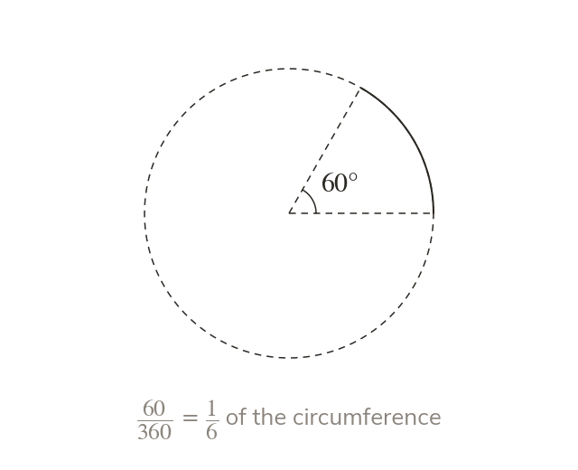

An arc is a fraction of the circumference
An arc is part of the circle's edge. Its length is the same fraction of the circumference as its angle is of
An arc is the part of the circle's edge between two radii. It takes the same fraction of the circumference as its angle takes of so its length is θ/360 ×